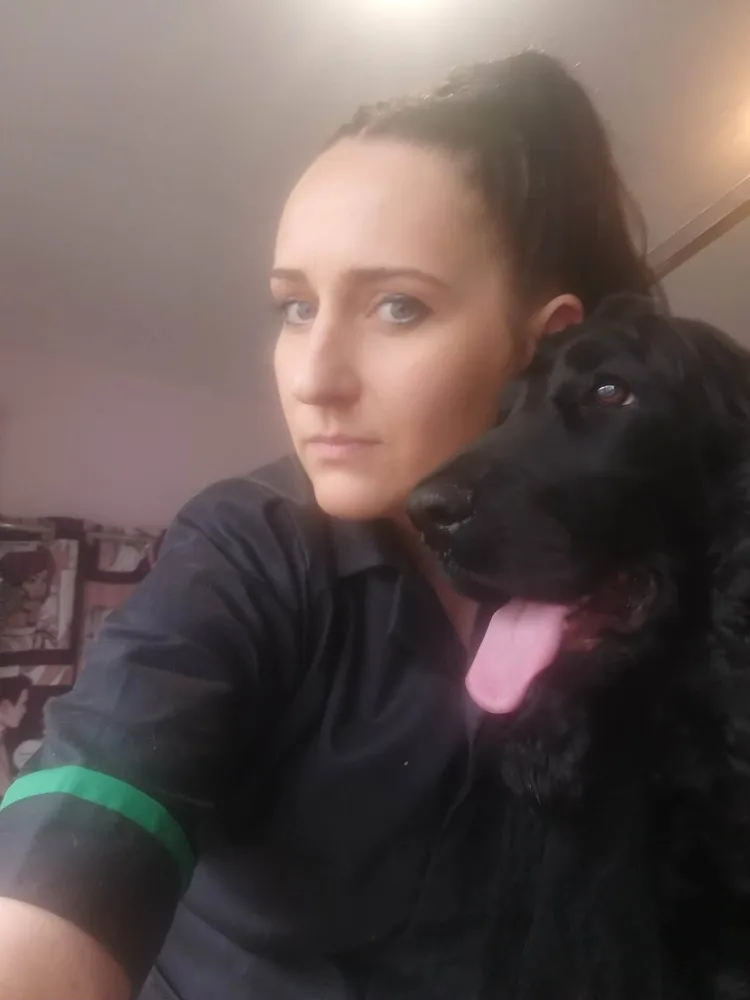

Salon, z którego pies wychodzi zadowolony
Psia Łapka w Piotrkowie Trybunalskim. Strzyżenie dopasowane do rasy, kąpiel i cała pielęgnacja. Spokojnie, bez pośpiechu i z cierpliwością do każdego psa. Także tego, który boi się maszynki.
5,0 w Google 23 opinie, wszystkie na piątkę
Dlaczego Psia Łapka
-
5,0 w Google
23 opinie i wszystkie na piątkę, najstarsze sprzed sześciu lat.
-
Cierpliwość wraca w opiniach
Właściciele piszą o niej przy psach strachliwych, starszych i pierwszorazowych.
-
Strzyżenie dopasowane do rasy
Razem z myciem, uszami, pazurkami i oczami w jednej wizycie.
Usługi
Zadzwoń i powiedz, jaka rasa i czego pies potrzebuje. Resztę ustalimy przez telefon.
-
Mycie i suszenie
-
Strzyżenie dopasowane do rasy
-
Rozczesywanie kołtunów
-
Obcinanie pazurów
-
Czyszczenie uszu
-
Pielęgnacja oczu

Wycena
Każdy pies jest inny, dlatego nie mamy sztywnego cennika — cenę ustalamy indywidualnie przez telefon.
Dokładne ceny ustalamy telefonicznie — zależą od rasy, rozmiaru i stanu sierści psa.
Efekty strzyżenia
Pupile po wizycie w Psiej Łapce. Kliknij dowolne zdjęcie, żeby przewinąć całą galerię. Więcej jest też na Facebooku i Instagramie.
Przed i po
Przeciągnij suwak, żeby zobaczyć różnicę.

Za nożyczkami stoi Aldona
W opiniach z Google od sześciu lat wraca to samo: cierpliwość, spokój i dobre podejście do psa. Także do tego strachliwego i do staruszka, który źle znosi wizyty.
Jeden z właścicieli napisał, że jego Kofik na widok salonu skacze i piszczy z radości. To chyba najlepsza recenzja, jaką psi fryzjer może dostać.
- Ocena w Google
- 5,0
- Opinii, wszystkie na 5
- 23
Co mówią właściciele
Wszystkie opinie pochodzą z profilu Psiej Łapki w Google.
„Najlepsza groomerka w mieście!”
„Fantastyczne podejście do mojego psa. […] Kofik cieszy się na wizytę, skacze i piszczy na widok Pani Aldony.”
„Niezwykle sympatyczna i profesjonalna psia fryzjerka. Ma świetne podejście do zwierząt, może dlatego, że sama ma i lubi psy.”
„Przesympatyczna Pani, bardzo profesjonalna, cierpliwa i wyrozumiała dla mojego staruszka, na pewno będziemy wracać.”
„Najlepsza psia fryzjerka. Mój piesek wychodzi zawsze pięknie ostrzyżony. Polecam.”
„[…] na wielki plus fakt, że można być obecnym przy strzyżeniu psiaka, z czym w innych salonach w Piotrkowie się nie spotkałam.”
Umów wizytę
Najprościej zadzwonić i umówić termin.
- Adres
- ul. Wyzwolenia 46
97-300 Piotrków Trybunalski - Godziny otwarcia
-
Poniedziałek 9:00–17:00 Wtorek 9:00–17:00 Środa 9:00–17:00 Czwartek 9:00–17:00 Piątek 9:00–17:00 Sobota 9:00–14:00 Niedziela Zamknięte